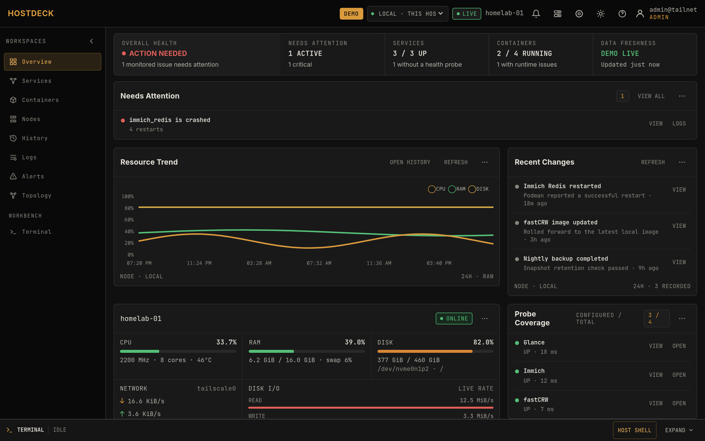

Observe
Host CPU, memory, disk, network, load and temperature; container health and resource usage; TLS certificate observations; service uptime and backup freshness, live and as 90-day history.
Tailscale-only · Zero inbound ports · No Node.js
Observe services, SLOs, backup freshness and container health across up to five rootless Podman nodes, then open the correct container or host shell without exposing a single admin port.
Move your cursor — the grid responds.

The four commitments of an operations console, each one implemented in code, not slides.
Host CPU, memory, disk, network, load and temperature; container health and resource usage; TLS certificate observations; service uptime and backup freshness, live and as 90-day history.
Container logs with regex search, interactive container shells, and an explicitly confirmed host Bash — context-linked to the alert or log that sent you there.
Tiered history in one SQLite file: 10-second samples for 48h, rolled up to 1-minute for 30 days and 15-minute for 90 days. Configurable quota, no TSDB.
Your Tailscale identity is the auth plane — no passwords, no exposed admin panel. Identity headers trusted only from loopback; sessions, mutations and shells carry CSRF and same-origin guards.
Per-service availability objectives with 7/30/90-day windows and explicit error budgets. Degraded states are flagged, not hidden.
Curate service-to-service dependencies and see the blast radius of a failing service at a glance.
No Node.js, no reverse proxy, no metrics exporters. The whole console is two processes talking over a Unix socket, plus one outbound-only agent per remote node.
A single static Go binary serves the UI and reads and writes one SQLite file. Configurable history quota, no TSDB.
The same binary, in agent mode, talks to the dashboard over a local Unix socket. No TCP listener — nothing to port-forward.
One binary per node, installed unprivileged, dials out to your tailnet over WSS. It never listens, so there is no inbound surface.
Everything runs rootless. Your Tailscale login is the only password.
One command, unprivileged, APT/DNF/Pacman aware. It enables the rootless Podman socket, installs the host agent and starts Compose.
Tailscale Serve terminates HTTPS for the dashboard — no host port is ever published.
Browse to your *.ts.net URL, log in with your tailnet identity, and start observing.
The full operator workflow with deterministic mock data: try regex log search, open a container shell, toggle the light theme.
Everything an operator runs on a 1–5 node lab, in one interface, no tab sprawl between metrics, logs and shells.
The full feature matrix with honest "we don't do this" notes lives in docs/comparison.md.
| Feature | HostDeck | Homepage | Uptime Kuma | Beszel / Netdata | Grafana stack |
|---|---|---|---|---|---|
| Zero inbound ports | Native | — | — | Partial · outbound WS | — |
| SLO error budgets 7/30/90d | First-party | — | Partial · uptime % only | — | Partial · needs plugin |
| Backup freshness monitoring | First-party | — | Partial · diff mechanism | — | Partial · hand-rolled |
| 90-day SQLite history, no Prometheus | Native | — | Partial · status pages | Partial · basic ~30d | Yes · but heavy |
| Interactive container shell | Native | — | — | — | — |
| Confirmed host Bash | Native | — | — | — | Partial · Cockpit-like |
| Tailscale identity = sole auth | Native | — | — | — | — |
Two native delivery channels, no vendor SDKs: ntfy push and an HMAC-signed generic webhook. Point the webhook at anything that speaks HTTP: a Telegram bot, Discord, Slack, Home Assistant, n8n — and alerts land where you already look.
Signed payloads with X-Homelab-Signature: sha256=<hex> · per-webhook secrets · in-UI test push and test POST · ack and silence rules. Setup in docs/operations.md.
The host shell is the most trusted feature, so it gets the most guards — and the whole system is designed so there is nothing to port-forward.
No password database. Viewer vs admin comes from your Tailscale login; identity headers are only trusted when the request's peer is loopback.
Local host access goes through a Unix-socket agent; remote nodes dial out over Tailscale WSS. No SSH, no agent listener, no reverse proxy to secure.
An explicit HOST_SHELL_USERS allowlist plus an in-UI confirmation. Session audit records, 15-minute idle timeout, 1-hour hard cap — never auto-resumed.
Dashboard runs read-only with dropped capabilities; host and node agents run as the unprivileged installing account. Three binaries, three privilege boundaries.
Architecture rationale: docs/adr.md · Full boundary: docs/operations.md
Yes — your tailnet identity is the auth plane, so there is no password database to secure. Tailscale's free tier covers a personal tailnet with 100 devices.
Nothing. Apache-2.0, three static Go binaries and one SQLite file. No SaaS, no licence keys, no telemetry.
Container health, stats, logs and shells are built against the rootless Podman socket. If you run Docker, the container workspaces won't have a socket to talk to.
Those are point tools: metrics, monitoring or availability. This console closes the loop: see the alert, open the right log, drop into the right shell, all in one place, with zero inbound ports. See the full comparison.
Yes — via the HMAC-signed webhook channel. The dashboard POSTs a versioned JSON payload to any HTTPS endpoint, so you forward it to your own bot, n8n flow or Home Assistant automation. Native ntfy push is also built in; we deliberately ship two channels instead of fifty SDKs.
One SQLite file on the dashboard host. History is rolled up in three tiers: 10s samples for 48h, 1-minute for 30 days, 15-minute for 90 days — with a configurable quota.
No marketing fluff — operational detail, architecture decisions, honest comparisons and measured numbers, all in the repository.
Not a bookmark grid, not a Grafana stack, not a container manager — the loop between them. Compare feature-by-feature against Homepage, Uptime Kuma, Beszel, Grafana and more.